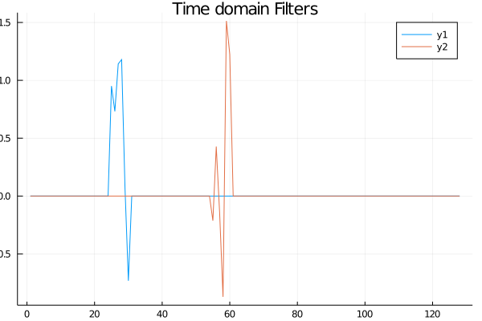
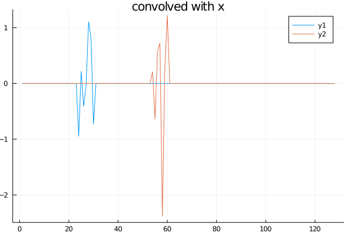
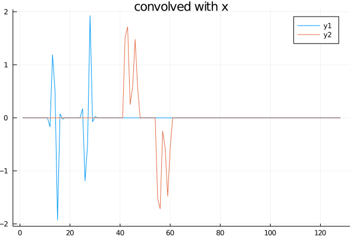
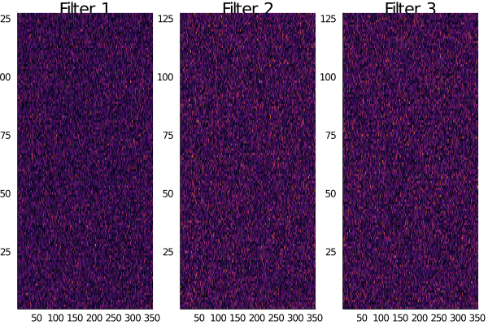
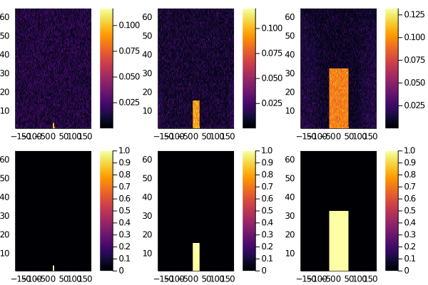
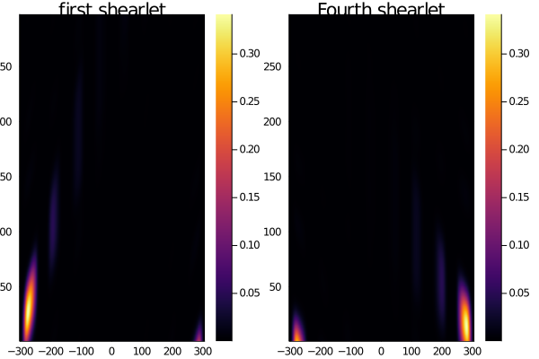
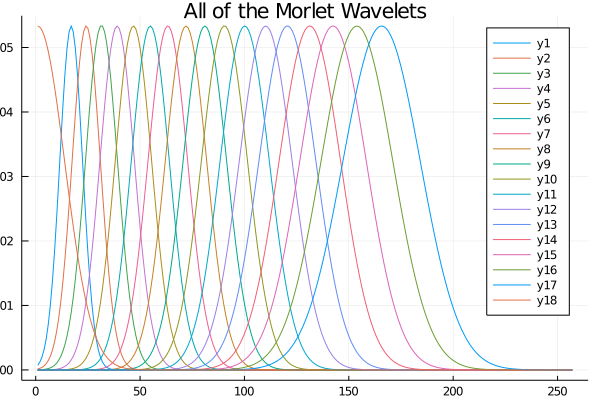

TODO: include notes about gpu usage
ConvFFT type
The core type of this package. As a simple example in 1D:
using FourierFilterFlux, Plots, FFTW, Flux, LinearAlgebra
w = zeros(128,2); w[25:30,1] = randn(6)
w[55:60,2] = randn(6)
ŵ = rfft(w, 1)
W = ConvFFT(ŵ,nothing,(128,1,2))
plot(W, title="Time domain Filters", dispReal=true,
apply=identity, vis=1:2)/home/travis/.julia/packages/GR/BwGt2/src/../deps/gr/bin/gksqt: error while loading shared libraries: libQt5Widgets.so.5: cannot open shared object file: No such file or directory connect: Connection refused GKS: can't connect to GKS socket application GKS: Open failed in routine OPEN_WS GKS: GKS not in proper state. GKS must be either in the state WSOP or WSAC in routine ACTIVATE_WS

So we've created two filters with small support and displayed them in the time domain (note that this has been done with a Plot Recipe). Applying this to a signal x, which is non-zero at only the two boundary locations:
julia> x = zeros(128,1,2);
julia> x[1,1,2] = 1; x[end,1,2] = -1; # positive on one side and negative on the other
julia> r = W(x); size(r)
(128, 2, 1, 2)
/home/travis/.julia/packages/GR/BwGt2/src/../deps/gr/bin/gksqt: error while loading shared libraries: libQt5Widgets.so.5: cannot open shared object file: No such file or directory
connect: Connection refused
GKS: can't connect to GKS socket application
GKS: Open failed in routine OPEN_WS
GKS: GKS not in proper state. GKS must be either in the state WSOP or WSAC in routine ACTIVATE_WS
Note that x has two extra dimensions; the second is the number of input channels and the third is the number of examples. The output r=W(x) has three extra dimensions, with the new dimension (the second one) varying over the filter. Because the default setting assumes periodic boundaries, we get a bleed-over, causing what should be exact replicas of the filters to give the difference between adjacent values. We can change the boundary conditions to address this, e.g. Pad(6)
W = ConvFFT(ŵ,nothing,(128,1,2),boundary= Pad(6))
r =W(x); size(r)┌ Warning: You didn't hand me a set of filters constructed with the boundary in mind. I'm going to adjust them to fit, this may not be what you intended └ @ FourierFilterFlux ~/build/dsweber2/FourierFilterFlux.jl/src/FourierFilterFlux.jl:129 /home/travis/.julia/packages/GR/BwGt2/src/../deps/gr/bin/gksqt: error while loading shared libraries: libQt5Widgets.so.5: cannot open shared object file: No such file or directory connect: Connection refused GKS: can't connect to GKS socket application GKS: Open failed in routine OPEN_WS GKS: GKS not in proper state. GKS must be either in the state WSOP or WSAC in routine ACTIVATE_WS

and now we have a positive copy and a negative copy of each filter. For more details, see the Boundary Conditions section. If you want to start with some random filter, rather than constructing your own, there's a simple way to do that as well:
julia> ex2Dsize = (127, 352, 1, 10);
julia> filt = ConvFFT(ex2Dsize, 3, relu, trainable=true,bias=false)
ConvFFT[input=((127, 352), nfilters = 3, σ=relu, bc=Periodic()]
julia> plot(heatmap(filt,dispReal=true,vis=1,colorbar=false,title="Filter 1"),
heatmap(filt,dispReal=true,vis=2,colorbar=false,title="Filter 2"),
heatmap(filt,dispReal=true,vis=3,colorbar=false, title="Filter 3"),
layout=(1,3))
Plot{Plots.GRBackend() n=3}
/home/travis/.julia/packages/GR/BwGt2/src/../deps/gr/bin/gksqt: error while loading shared libraries: libQt5Widgets.so.5: cannot open shared object file: No such file or directory
connect: Connection refused
GKS: can't connect to GKS socket application
GKS: Open failed in routine OPEN_WS
GKS: GKS not in proper state. GKS must be either in the state WSOP or WSAC in routine ACTIVATE_WS
Here we've created a set of real weights represented in the Fourier domain. Now let's see if these filters can be fit to various lowpass filters:
fitThis = zeros(64,352,3); fitThis[1:3,(176-3:176+3),1] .= 1;
fitThis[1:15,(176-15:176+15),2] .= 1; fitThis[1:32,(176-44:176+44),3] .= 1;
targetConv = ConvFFT(fitThis, nothing, (127,352,1,10))
loss(x,y) = norm(filt(x) - targetConv(x))
genEx(n) = [(cpu(randn(ex2Dsize)), true) for i=1:n];
Flux.train!(loss, params(filt), genEx(100), ADAM())
plot(heatmap(filt,vis=1), heatmap(filt,vis=2), heatmap(filt,vis=3),
heatmap(targetConv,vis=1), heatmap(targetConv,vis=2),
heatmap(targetConv,vis=3))/home/travis/.julia/packages/GR/BwGt2/src/../deps/gr/bin/gksqt: error while loading shared libraries: libQt5Widgets.so.5: cannot open shared object file: No such file or directory connect: Connection refused GKS: can't connect to GKS socket application GKS: Open failed in routine OPEN_WS GKS: GKS not in proper state. GKS must be either in the state WSOP or WSAC in routine ACTIVATE_WS

The top three are the fit filters, while the bottom three are the targets. So after 100 examples, we have something that passibly resembles the desired low-pass filters, though not yet matching the norm. Finally, if you would rather be doing your computations on the gpu, simply use the gpu function of Flux.jl or cu of CUDA.jl:
julia> Wgpu = W |> gpu
ConvFFT[input=((128,), nfilters = 2, σ=identity, bc=Pad(6,)]
julia> x = x |> gpu;
julia> Wgpu(x)[:,1,1,1]'
1×128 LinearAlgebra.Adjoint{Float32,Array{Float32,1}}:
0.0 0.0 0.0 0.0 0.0 0.0 0.0 0.0 … 0.0 0.0 0.0 0.0 0.0 0.0 0.0FourierFilterFlux.ConvFFT — Type# preconstructed filters w
ConvFFT(w::AbstractArray{T,N}, b, originalSize, σ = identity; plan=true,
boundary = Periodic(), dType=Float32, trainable=true, OT=Float32, An=nothing)
where {T,N}
# randomly constructed filters
ConvFFT(k::NTuple{N,Integer}, nOutputChannels = 5,
σ=identity; nConvDims=2, init = Flux.glorot_normal,
plan=true, bias = true,
dType=Float32, OT=Float32, boundary=Periodic(),
trainable=true, An=nothing) where NSimilar to Conv from Flux.jl, but does pointwise multiplication in the Fourier domain, with boundary conditions boundary, and applies the nonlinearity σ. It is worth noting that the bias is added in the Fourier domain; if you don't want a bias, set b=nothing. For the first method, the weights w should have dimension 1 greater than the size of the convolution, while for the second, k gives the size of the input (including channels and batch size), for which appropriate weights are generated in the fourier domain according to the distribution init.
Shared Arguments
σ=identity: a function to apply.dType::DataType=Float32: the data type being input. By default, it assumes both the filter and the signal are real, which allows us to use an rfft and half the (complex) coefficients we would otherwise need.OT::DataType=Float32: the output datatype, usually determined by the (space domain) type of the filters. Currently assumes that if this is complex, then the filters are analytic (so only defined for positive frequencies).plan::Bool=true: use precomputed fft plan(s), as this is a significant cost. Set this tofalseif you have variable batch/channel sizes.trainable::Bool=true: The entries are trainable as Flux objects, and so are returned in aparamscall if this istrue.boundary::ConvBoundary: determines how the edges are treated. See e.g.Pad.An::Union{Nothing,NTuple{<:Integer}}=nothing: only used if the output type is complex, so the filters are complex. In that case, it is a list of the filters which are actually real. This is included to allow for averaging wavelets which are real even for analytic wavelets. For bothwaveletLayerandshearingLayer, this is the last filter, so if there are 18 total wavelets,An=(18,).
First constructor only
w::AbstractArray{T,N}: the weights. should beD+1, with the last dimension being the total number of filters
b::Union{Nothing,AbstractArray}: ifnothing`, no bias is added. Otherwise it should be (input channels)×(output channels)
Second constructor only
k::NTuple{N,Integer}: the dimensions of the input. In the 1D case it should be three entries e.g.(132,3,100)which is (signal)×(channels)×(examples). In the 2D case it should be four entries e.g.(132,132,3,100), which is (x)×(y)×(channels)×(examples).nOutputChannels::Integer=5: the number of filters to use.bias::Bool=true: determines whether or not to create a bias.init::function=Flux.glorot_normal: The way to initialize both the bias (if defined) and the weights. Any function that results in a matrix is allowed, though I would suggest something from Flux, or one of the ones defined in this package.nConvDims::Integer: the number of dimensions that we will be doing the convolution over, askis somewhat ambiguous.
Plot Recipe
To ease displaying the weights, we have a recipe that can be used with either plot or heatmap. First, we will generate some preconstructed 1D and 2D filters to demonstrate with:
W1 = waveletLayer((256,1,5))
W2 = shearingLayer((256,256));ConvFFT[input=((256, 256), nfilters = 49, σ=abs, bc=Pad(168, 176)]
The general form of the plot is
plot(cv::ConvFFT{N}; vis=1, dispReal=false, apply=abs, restrict=(Colon(), vis)) where {N}
heatmap(cv::ConvFFT{N}; vis=1, dispReal=false, apply=abs, restrict=(Colon(), vis)) where {N}The arguments are
vis=1: a structure identifying which filters you want to display. The default value is just the first one (displaying them one at a time makes more sense in the 2D case). It is worth noting that because these are created using a rfft, this is only the postive frequencies in the first dimension (vertical in the 2D shearlet plots and horizontal in the 1D plot).
plot(heatmap(W2,title="first shearlet"), heatmap(W2,vis=4,title="Fourth shearlet"))
plot(W1,vis=:,title="All of the Morlet Wavelets")/home/travis/.julia/packages/GR/BwGt2/src/../deps/gr/bin/gksqt: error while loading shared libraries: libQt5Widgets.so.5: cannot open shared object file: No such file or directory connect: Connection refused GKS: can't connect to GKS socket application GKS: Open failed in routine OPEN_WS GKS: GKS not in proper state. GKS must be either in the state WSOP or WSAC in routine ACTIVATE_WS /home/travis/.julia/packages/GR/BwGt2/src/../deps/gr/bin/gksqt: error while loading shared libraries: libQt5Widgets.so.5: cannot open shared object file: No such file or directory connect: Connection refused GKS: can't connect to GKS socket application GKS: Open failed in routine OPEN_WS GKS: GKS not in proper state. GKS must be either in the state WSOP or WSAC in routine ACTIVATE_WS
 
dispReal::Bool=false: takes care of doing the correct type of fft to get the space domain filters centered; usually if this is used you also want to changeapply::Function=abs: fromabsto the identity; the default ofabsmakes the most sense in the frequency domain. You probably also want to changerestrict=nothing: to show the plot only around the support of the filter:
plot(heatmap(W2, dispReal=true,title= "first wavelet space domain"),
heatmap(W2, dispReal=true, restrict= (255:345,260:350), apply=identity,
title= "first wavelet space domain \nzoomed without abs"));/home/travis/.julia/packages/GR/BwGt2/src/../deps/gr/bin/gksqt: error while loading shared libraries: libQt5Widgets.so.5: cannot open shared object file: No such file or directory connect: Connection refused GKS: can't connect to GKS socket application GKS: Open failed in routine OPEN_WS GKS: GKS not in proper state. GKS must be either in the state WSOP or WSAC in routine ACTIVATE_WS